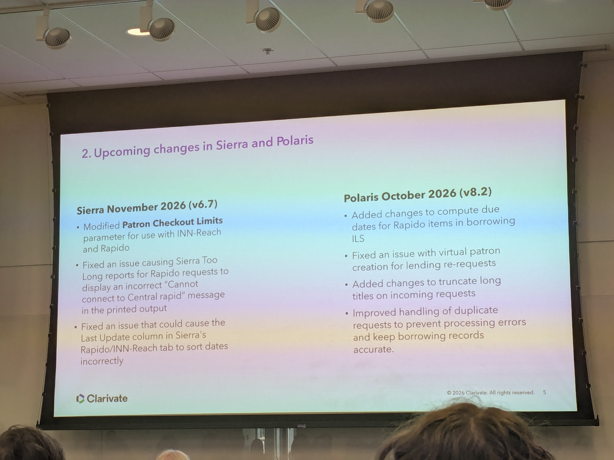
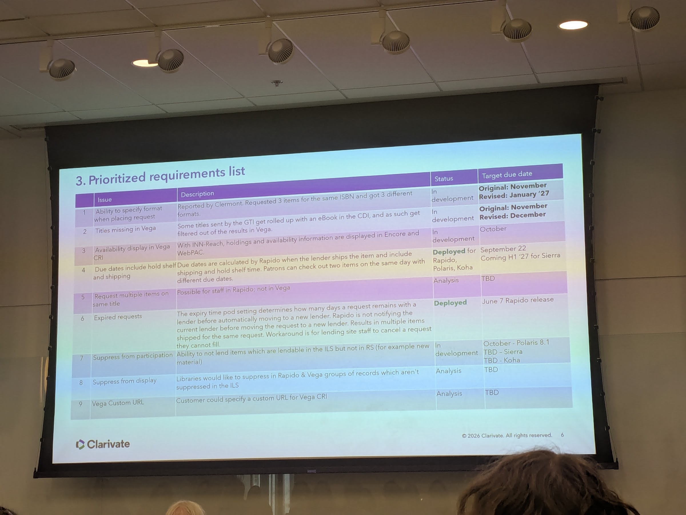

Rapido / INN-Reach update
Friday, 2026-10-09 · 15:07
RapidoINN-ReachClarivate
📝 These are Ray’s personal notes from the session, not an authorized transcript. They reflect his interpretation and may contain errors or omissions — those are his, not the speaker’s. Corrections, amendments, or takedown requests are welcome — open an issue.
Clarivate-branded slides 5–6 from a separate deck; the speaker isn't in the photos. Rapido and INN-Reach
are Clarivate's interlibrary lending (resource sharing, "RS") systems.
Slide 5: Upcoming changes in Sierra and Polaris
Sierra November 2026 (v6.7)
- Modified Patron Checkout Limits parameter for use with INN-Reach and Rapido
- Fixed an issue causing Sierra Too Long reports for Rapido requests to display an incorrect "Cannot
connect to Central rapid" message in the printed output
- Fixed an issue that could cause the Last Update column in Sierra's Rapido/INN-Reach tab to sort dates
incorrectly
Polaris October 2026 (v8.2)
- Added changes to compute due dates for Rapido items in borrowing ILS
- Fixed an issue with virtual patron creation for lending re-requests
- Added changes to truncate long titles on incoming requests
- Improved handling of duplicate requests to prevent processing errors and keep borrowing records accurate
Slide photo (photo 08, 3:07 PM)

Slide 6: Prioritized requirements list
On the slide, the Status and Target cells sit slightly above their rows; the coloured row bands confirm
the pairing below. "Vega CRI", "GTI" and "CDI" are as written on the slide (CDI is Clarivate's Central
Discovery Index).
| # |
Issue |
Status |
Target |
| 1 |
Ability to specify format when placing request |
In development |
Original: November
Revised: January '27 |
| 2 |
Titles missing in Vega |
In development |
Original: November
Revised: December |
| 3 |
Availability display in Vega CRI |
In development |
October |
| 4 |
Due dates include hold shelf and shipping |
Deployed for Rapido, Polaris, Koha |
September 22
coming H1 '27 for Sierra |
| 5 |
Request multiple items on same title |
Analysis |
TBD |
| 6 |
Expired requests |
Deployed |
June 7 Rapido release |
| 7 |
Suppress from participation |
In development |
October: Polaris 8.1
TBD: Sierra
TBD: Koha |
| 8 |
Suppress from display |
Analysis |
TBD |
| 9 |
Vega Custom URL |
Analysis |
TBD |
What each one means
The Description column from the slide, by row number.
- Ability to specify format when placing request. Reported by Clermont. Requested 3 items for the same ISBN and got 3 different formats.
- Titles missing in Vega. Some titles sent by the GTI get rolled up with an eBook in the CDI, and as such get filtered out of the results in Vega.
- Availability display in Vega CRI. With INN-Reach, holdings and availability information are displayed in Encore and WebPAC.
- Due dates include hold shelf and shipping. Due dates are calculated by Rapido when the lender ships the item and include shipping and hold shelf time. Patrons can check out two items on the same day with different due dates.
- Request multiple items on same title. Possible for staff in Rapido; not in Vega
- Expired requests. The expiry time pod setting determines how many days a request remains with a lender before automatically moving to a new lender. Rapido is not notifying the current lender before moving the request to a new lender. Results in multiple items shipped for the same request. Workaround is for lending site staff to cancel a request they cannot fill.
- Suppress from participation. Ability to not lend items which are lendable in the ILS but not in RS (for example new material)
- Suppress from display. Libraries would like to suppress in Rapido & Vega groups of records which aren't suppressed in the ILS
- Vega Custom URL. Customer could specify a custom URL for Vega CRI
Slide photo (photo 09, 3:12 PM)
